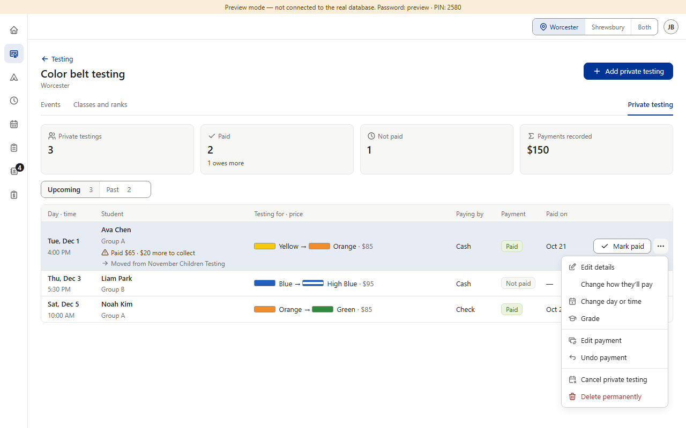
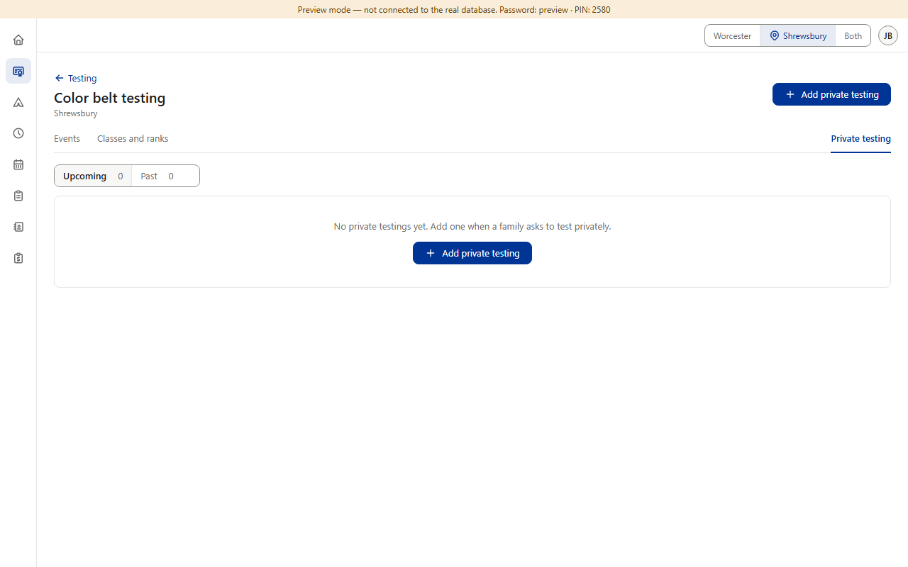
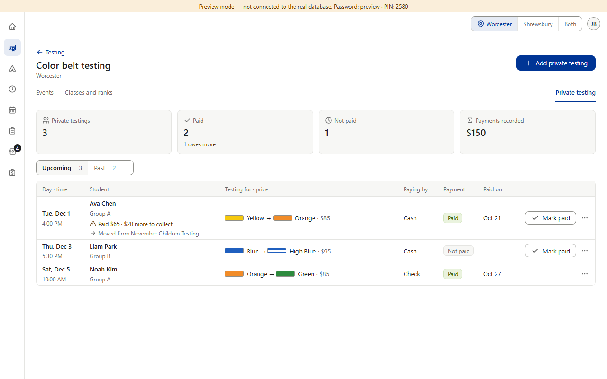
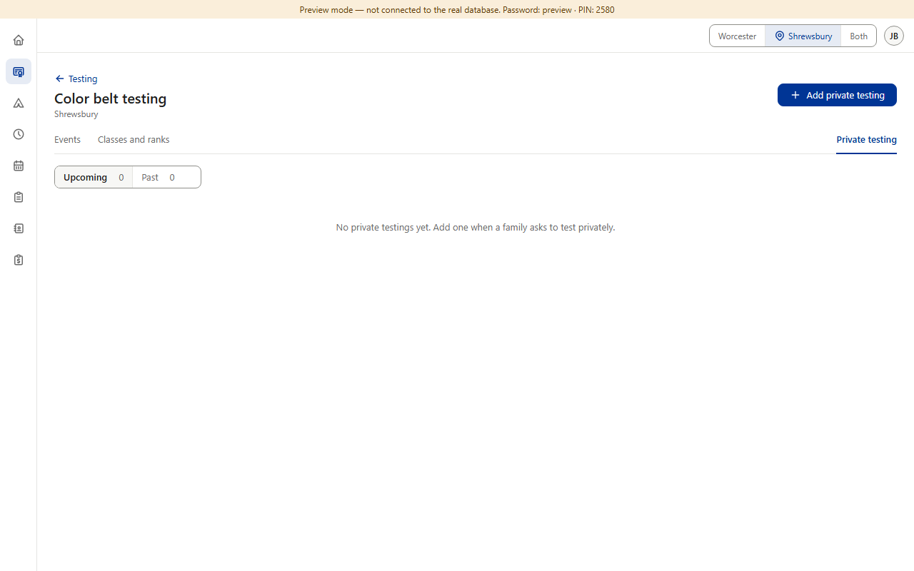
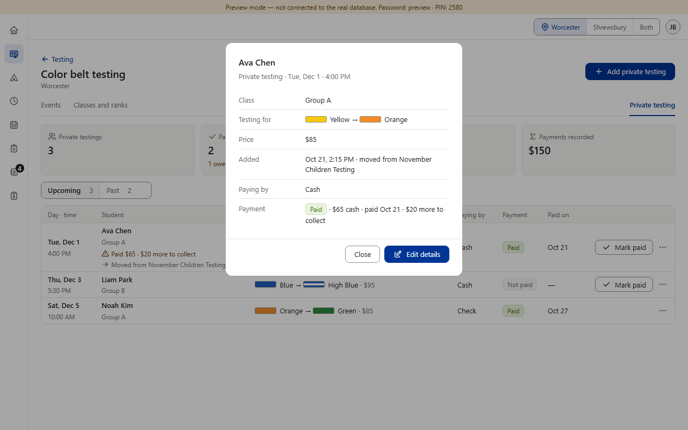

Color Belt · Screen 1 · Private testing tab (CB3, CB4, CB6, CB8, CB15, CB17)
Everything here was already decided in the design review (rows v1.003, v1.006, v1.009, v1.011, v1.024, v1.028). This shows how it lands on Color Belt's private testing tab. One question at the bottom.(Preview screenshots, fake data. The “after” is drawn on top of the real page; nothing in the app is built yet.)
Today

1. Not paid card uses a clock. In ⋯, “Change how they’ll pay” sits second and has no icon.

2. Empty list: a box with a second blue “Add private testing” button.

3. Tapping a row opens nothing. After Edit payment the toast says “Payment saved”, no Undo. After Restore or Edit details: no Undo.
The event roster gets the same icon and toast changes: Not paid card ti-circle-x, “Change how they’ll pay” ti-switch-horizontal, Restore ti-arrow-back-up, the No show result ti-user-x, and Edit payment → “Payment changed” + Undo.
After
1. Not paid card: ti-circle-x (CB15). ⋯ order: Edit details · Change day or time · Grade · Change how they’ll pay with ti-switch-horizontal (CB8, CB15). Money items below the line stay as they are.

2. The one line every list uses; the header button is the one way to add (CB17).

3. Tap a row → read-only summary, like the event roster’s: class, testing for, price, when added, paying by, the payment and its date. Close · Edit details (CB6). Mark paid and ⋯ stay on the row.
Hide private details on: the summary’s payment lines say “Payment details are hidden on this tablet.”; payment toasts use the general words and have no Undo (as today). No Undo on “Changes saved” when the edit cleared a result (as the event roster). Undo payment asking first (the other half of CB3) waits for the shared confirm box.
Same summary at every size; nothing is cut off at 320 wide.
One question — Change day or time. Today it closes with no message at all. CB4 adds “Changes saved” + Undo after Restore and Edit details only. A · Recommended: give it “Changes saved” + Undo too.+ every change on this tab confirms itself the same way, and a wrong day is one tap to put back. − one more small build (the Undo moves the day and time back, refusing if the old slot is no longer allowed). B · Keep it silent.+ no work. − the only change on the tab with no message; a mistake must be fixed by opening Change day or time again.